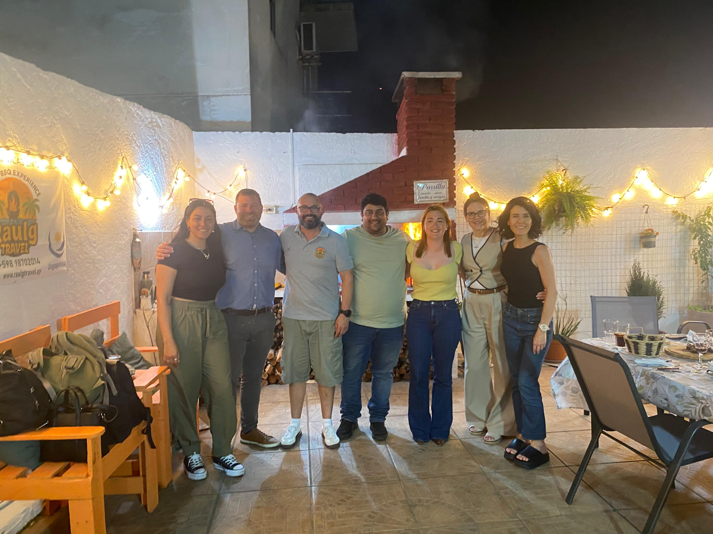
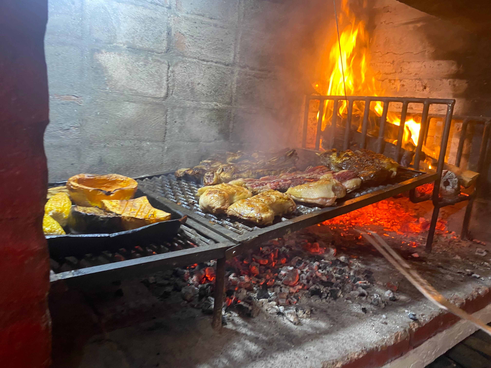
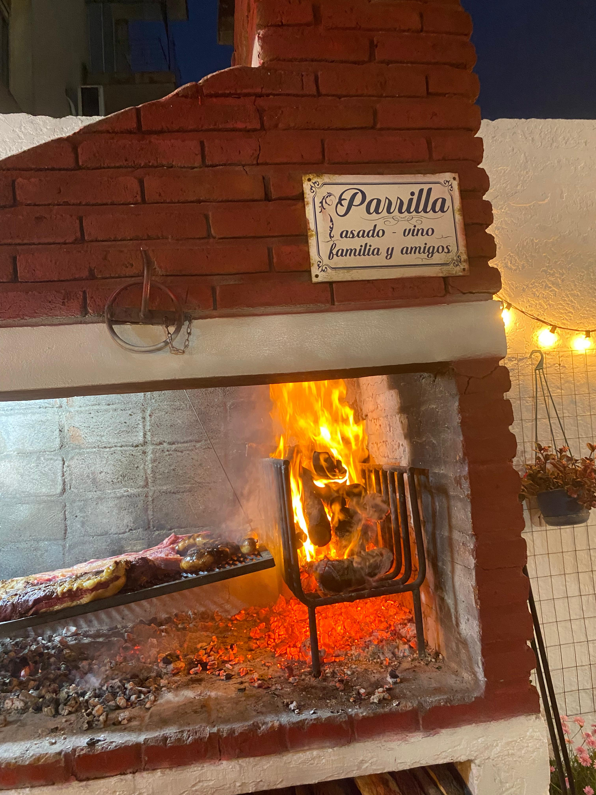
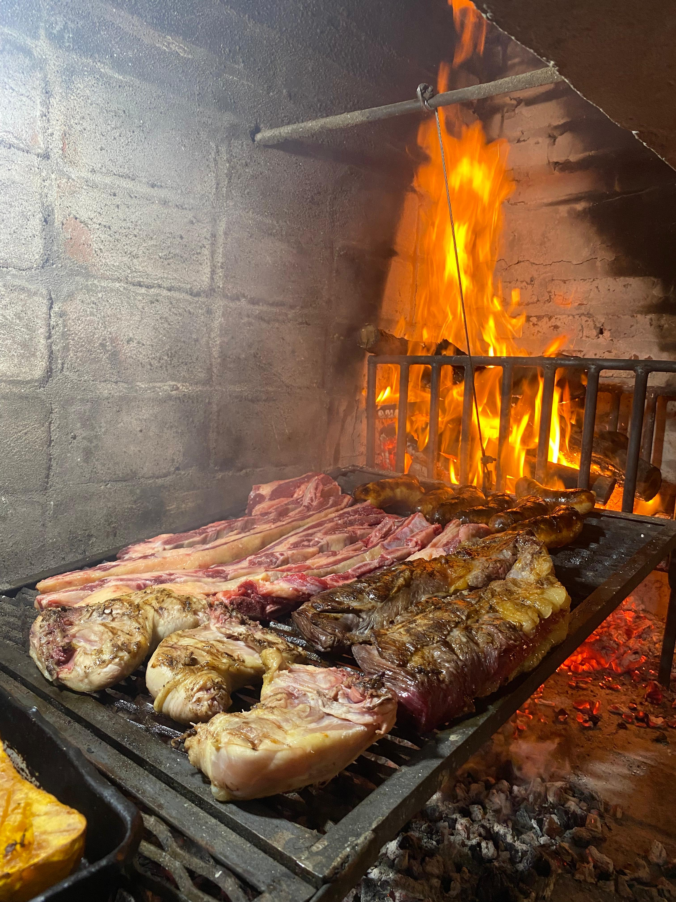
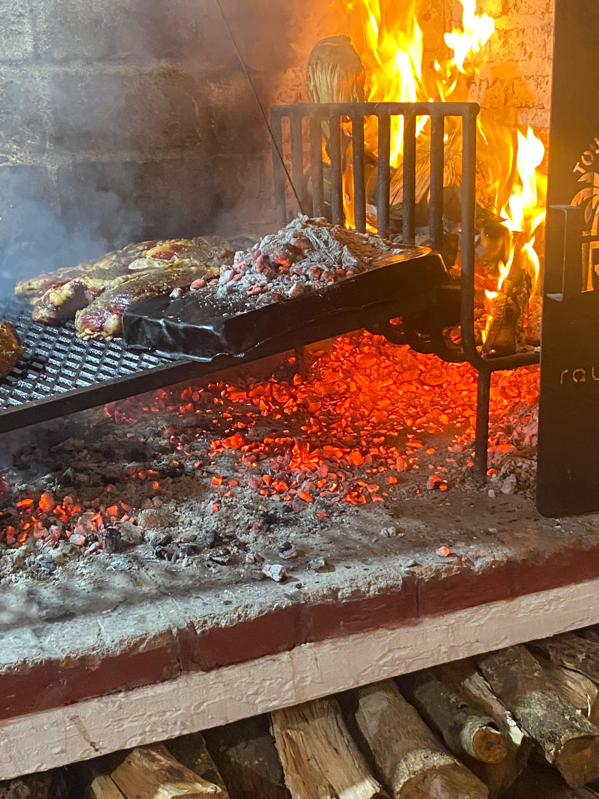
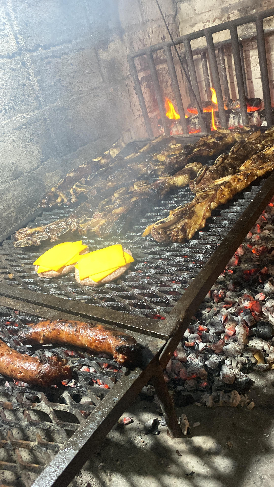

Live the tradition of an authentic Uruguayan asado in the home of our local guide and host. Enjoy grilled meats, typical sides, unlimited drinks, and an experience full of stories, flavors, and hospitality.
USD 150 per person
Discover one of Uruguay’s most beloved traditions through an authentic, close, and flavorful culinary experience.
We invite you to share a true Uruguayan asado in the home of our local guide and host, someone passionate about their land, culture, and traditions.
With warmth, charisma, and hospitality, our host opens the doors of their home to welcome you as a special guest.
During this experience you will discover why Uruguayan asado is much more than a meal: it is a ritual that brings people together around the fire, where stories, customs, and good moments are shared.
Enjoy grilled meats, traditional sides, unlimited drinks, and the option to choose a vegetarian menu.
Far from conventional dining experiences, this proposal lets you connect with Uruguayan culture from a different place: the home of a local person.
Because getting to know Uruguay also means sharing its table, its flavors, and its hospitality.
Watch the reel on Instagram @_sacramentoadventuresApproximate duration: 3 hours. Stages do not have fixed times.
Minimum 4 participants (USD 600).
Languages: Spanish · English · Portuguese
Pick the day you plan to come so we can coordinate availability in advance.
Choose pickup and drop-off cities, group size, language, and menu preference. Minimum 4 participants (USD 600).
After you send your inquiry, our team will contact you to confirm details for Asado Experience Montevideo. This experience is currently on request — no online payment is required at this step.





